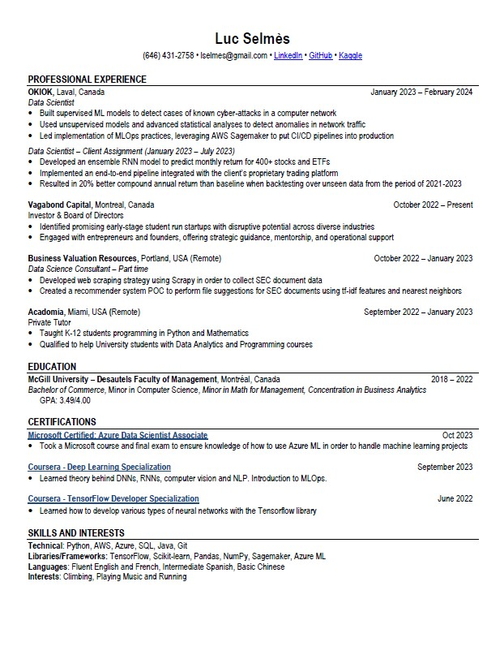

Driven, detail-oriented Data Scientist with a passion for emerging technologies. Utilizes relevant experience in machine learning and project management to develop integrated solutions. Particularly interested in AI safety and responsible AI.
A brief overview of your CV or a link to download it.
Click on the thumbnail to view my CV.
Tool to convert napster playlists to spotify playlists. Used Spotify API and Napster API.
View on GitHubKaggle competition on linking writing processes with writing quality.
View on GitHubCurrently working on a face recognition library that can be used in conjunction with a raspberry pi in order to make a DIY security camera with built-in face recognition.
View on GitHubIf you have any questions, feel free to reach out to me:
Email: lselmes@gmail.com